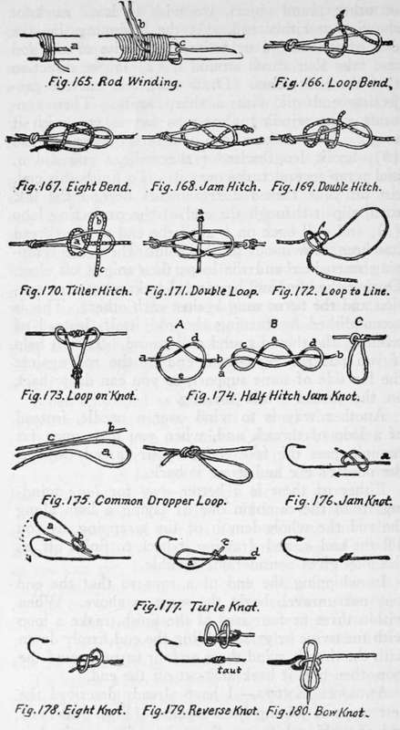

Knots, Hitches, And Lashings. Part 6
Description
This section is from the book "Camping And Woodcraft", by Horace Kephart. Also available from Amazon: Camping and Woodcraft.
Knots, Hitches, And Lashings. Part 6
Necklace Tie (Fig. 163) Or Portuguese Knot
Used to hold two timbers or hawsers side by side, and for lashing shear legs. The lashing is passed round and round the two objects to be joined (a), only a few turns being taken in the case of shears, then the lashings are brought round across themselves, from opposite directions (b) and tied with a reef knot.
When employed as a lashing for shear legs (e.g., supports for the ridge pole of a tent) the crossing of the two legs puts a strain on the knot, holding it in place (c), yet there is enough play for the legs to be spread as far apart as desired, since the rope has been wound rather loosely for that purpose.
Pole Splice (Fig. 164)
If it is desired to set up a tall pole, and there is no material at hand that is long enough for the purpose, erect as good a pole as you can get, lash a shorter one to its lower part (a), resting on the ground, and, above this, butting on the top of the short one, lash another pole (b). Tighten the lashings by driving a wedge into each (c). The wedges must be rounded on the outer side to avoid cutting the ropes.
To splice a broken pole or the like, bind on a splint and wedge it as above: the splice will be more rigid than if screwed.
Winding (Fig. 165)
In winding a fishing rod, or other round object, we wish to leave no knot showing at either end. At the beginning, lay the end of the thread or twine lengthwise of the rod and take four turns around it (a) in ^he direction that the end points. Draw taut, anc ^ut the projecting end off with a sharp knife. Then continue your winding almost as fa" as you wish it to go. Now make a loop of a bit _i waxed thread (Z>), lay it lengthwise of the rod, as you did a, and wrap several turns over it. To finish this end, cut off your thread a few inches beyond the last turn, slip it through the end of the projecting loop (c), and pull back on b until the end of the thread has been drawn out at the point where the wrapping started around the loop; then snip it off close. During the winding, be careful to keep an even tension and the turns snug against each other. This is accomplished by turning the rod itself, instead of winding the thread round and round. It will help if you put the right-hand end of the rod against the far side of some support, so you can draw back on the thread while turning.
Another way is to wind over a needle, instead of a loop of thread, and, when you have gone far enough, pass the free end of your thread through the needle's eye and draw it back.
Either of these is a better way for long windings than the common one of laying a loop along the rod the whole length of the wrapping, as you did the end a, and drawing it back to finish off, as the loop gives considerable trouble.
In whipping the end of a rope so that the end may not unravel, begin the same as above. When within three or four laps of the finish, make a loop with the twine or yarn, holding the end firmly down with the thumb, wind three or four turns around the loop, then pull it back and cut off the end.
Anglers' Knots
I have already described the best ways of joining lines together (Figs. 108-111) and of making loops on the ends of lines or leaders (Figs. 129-134) Following are special knots for joining lines to loops, loops to loops, for making dropper loops, and for tying on hooks, sinkers, etc.
Loop Bend (Fig. 166)
The quickest way to attach a line to a leader loop. Knot the end of the line, pass it through the loop, around the outside of it, back under itself, and draw taut, leaving nothing but the knot projecting. Fairly secure, compact, and easy to undo. Sometimes called jam hitch.
Eight Bend (Fig. 167)
Same as above but with the line carried back over itself and forward under the first formed loop. Really a figure-of-eight knot. More secure than the plain loop bend, and almost as easy to cast off.
Jam Hitch (Fig. 168)
A neat hitch, and quite safe. To loosen it, shove the loops apart.
Double Hitch (Fig. 169)
Very secure, and neat. To loosen, push forward on line.
Tiller Hitch (Fig. 170)
A bit clumsy, but reliable, and easiest of all to cast loose, which is done by a tug at c, when the line instantly comes adrift. This can be done in the dark.
Holding the leader loop in left hand, catch the main line within two inches of the end by the same finger and thumb, underneath the knot of the leader loop; pass the line across the loop, fetch the loose end up over it, and double it into a lopp, which is now passed into the head of the leader loop, and all drawn taut.
Another way to make this slip knot is first to bend the end of the line into the shape shown in the figure (a, b, c) ; now pass the leader loop down through a, raise it over the loop b and drop it down around it to the main line; then draw tight.
Double Loop (Fig. 171)
The end of a leader usually is looped, and so is the gut of most flies and snelled hooks. To join these, push the loop of the snell through that of the leader, then the hook through the loop of its snell, and draw tight.
If there is no loop on the fly, the leader may be made with a loop at each end where the dropper: fly is to be attached, these loops joined as above, a knot tied in the end of the dropper fly's snell, and this inserted like a in the figure, before drawing taut. A looped snell can be used in the same way, gripped in the joint, just below its knot, and with its own loop projecting above. This makes it easy to change flies.
Loop To Line (Fig. 172)
A snelled hook can be readily attached to a line anywhere except at the end, by bending the line into a bight, slipping the loop of the snell over the bight, the hook up through as shown, and drawing tight. A dropper fly can be hitched to a leader that has no loop, in the same way, but the strain may eventually cut the leader.
Loop Over Knot (Fig. 173)
In a similar way a looped snell is hitched over a knot in a leader when the leader has no dropper loop.
A split shot for sinker can be attached to a line or leader in the same way. Close it on a loop of thread just large enough for the shot to pass through, and loop the sinker on the leader just above a knot. The thread being relatively weak, it will break if the sinker gets caught, instead of breaking the gut,,'
Half Hitch Jam Knot (Fig. 174)
To make a dropper loop anywhere on a line or leader, this method may be employed. First make a common half hitch (A). Then spread c and d apart and bring e up between them (B). Now draw the ends a and b taut, and a loop is formed (C) which stands at right angle to the line or leader. If the dropper loop does not stand straight away from the leader, like this one, it is likely to cause a fine snell to foul in casting.
Common Dropper Loop (Fig. 175)
The usual way of tying a dropper loop is to bend the end of one strand back against itself (a) into the form of a loop, lay it alongside the next strand (b) which runs toward the main Kne, then make a common overhand knot at c with all of them together. Of course, the gut must be well soaked and soft. Having drawn them tight, take the loop a in one hand and the upper end b in the other, and pull the-m strongly apart, so that the loop will point outward nearly at a right angle, instead of lying close along the line.
With light leaders it is better to make the loop of a separate piece of gut, somewhat heavier and stiffer than the main strands, lay it alongside a complete leader and tie as above. It will stand away at the proper angle.
Jam Knot (Fig. 176)
To attach an eyed fly or hook to gut: Push one end of gut through the eye toward bend of hook; bring it back and make with it a slip knot around the gut, as in the figure, leave this open so it will pass forward over the eye of the hook, which is done by pulling at a. Draw tight, and clip oft the protruding end.
Turle Knot (Fig. 177)
Pass end of gut through eye, and draw hook well up on gut to be out of the way. Make a running loop (a) with end of gut; draw the knot (b) nearly tight; pass hook through the loop thus made, and bring knot to eye of hook; draw tight by pulling first on c, then on d, and clip off end. This is particularly a good knot for eyed flies.
Figure-Of-Eight Knot For Hooks (Fig. 178)
A secure knot, more easily loosened than the turle knot.
Reverse Knot (Fig. 179)
Pass end of gut through eye of hook, take two turns with it around the leader, then stick it backward under the turn nearest the eye, draw taut, and clip off.
Single Bow Knot (Fig. 180)
Sometimes used for attaching hook to line when it is desired to change quickly.
Continue to:
- prev: Knots, Hitches, And Lashings. Part 5
- Table of Contents
- next: Chapter XVII. Trophies. Pelts, Buckskin And Rawhide